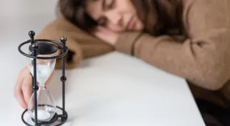

Nous sommes la Génération Z , née avec le développement des moyens numériques : internet, smartphone. Z comme zapping, nous devons gérer des informations innombrables, des sollicitations constantes. En conséquence, nous savons tout naturellement lire nos notifications, consulter nos cours et écouter le dernier album de notre chanteur préféré en même temps. Aujourd’hui, une actualité en efface une autre. Une pandémie mondiale est presque oubliée quand survient un nouveau conflit, qui lui-même s'effacera derrière un autre buzz ou scandale.
Globalement, la société qui nous entoure nous pousse à aller toujours vite, à décider maintenant et tout de suite. Réussir notre concours, nos devoirs, notre future vie professionnelle… Cette avalanche d’objectifs en réalité nous empêche de prendre le temps de ne rien faire. Le philosophe Paul Valéry (1871 – 1945) écrivait « Nous ne supportons plus la durée. Nous ne savons plus féconder l’ennui. Notre nature a horreur du vide, ce vide sur lequel les esprits de jadis savaient peindre les images de leurs idéaux, leurs idées… ». Le temps de ne rien faire n’existe plus. La pression des réseaux sociaux écrase et englobe tout le temps libre. On a toutefois plus souvent l'impression d'avoir perdu son temps !
L’enfance peut paraître longue et ennuyeuse. Néanmoins, il ne sera plus possible après de retrouver ces temps de réflexion pour s’inventer un demain. Notre génération est pressée de grandir tout de suite au risque de se sentir vieille avant l’heure avec cette désagréable impression de courir après le temps. Nous voulons tout faire maintenant : réussir notre vie professionnelle, sociale, sauver la planète, révolutionner le futur... Dans la mesure où on est plus lent que les autres, il peut parfois être difficile de suivre le rythme de la société et de ce fait de correspondre aux normes attendues.